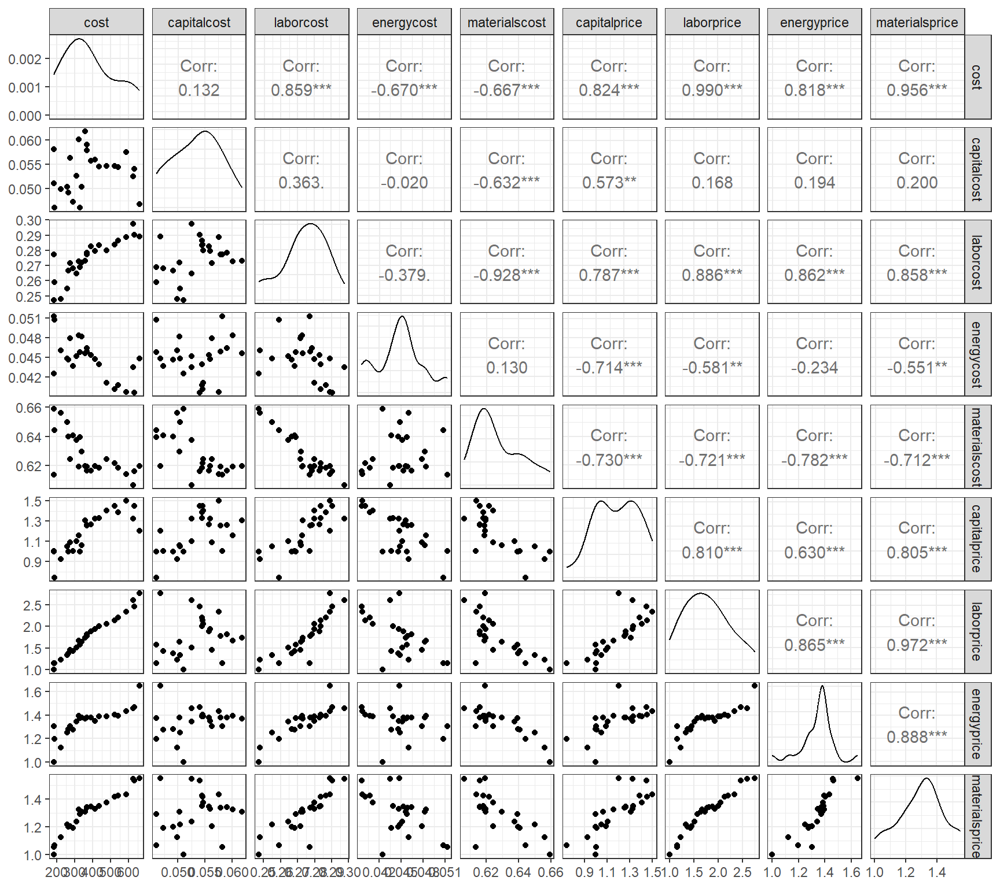
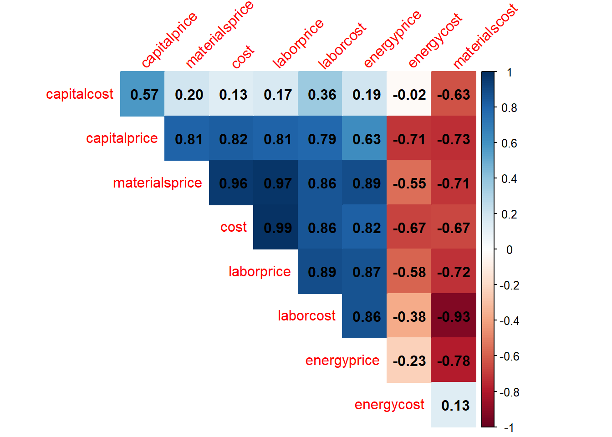
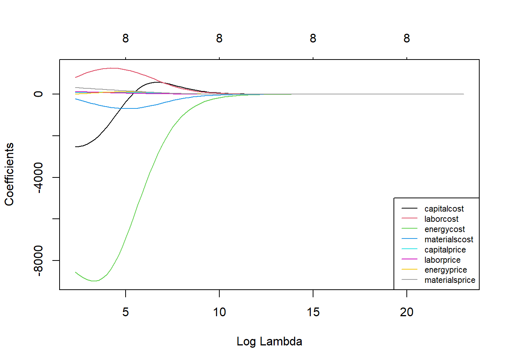
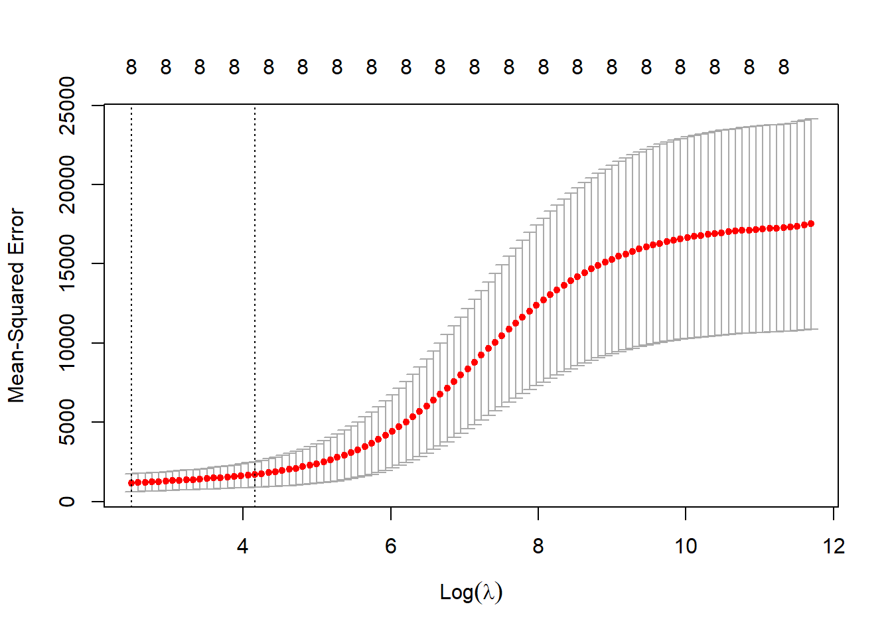
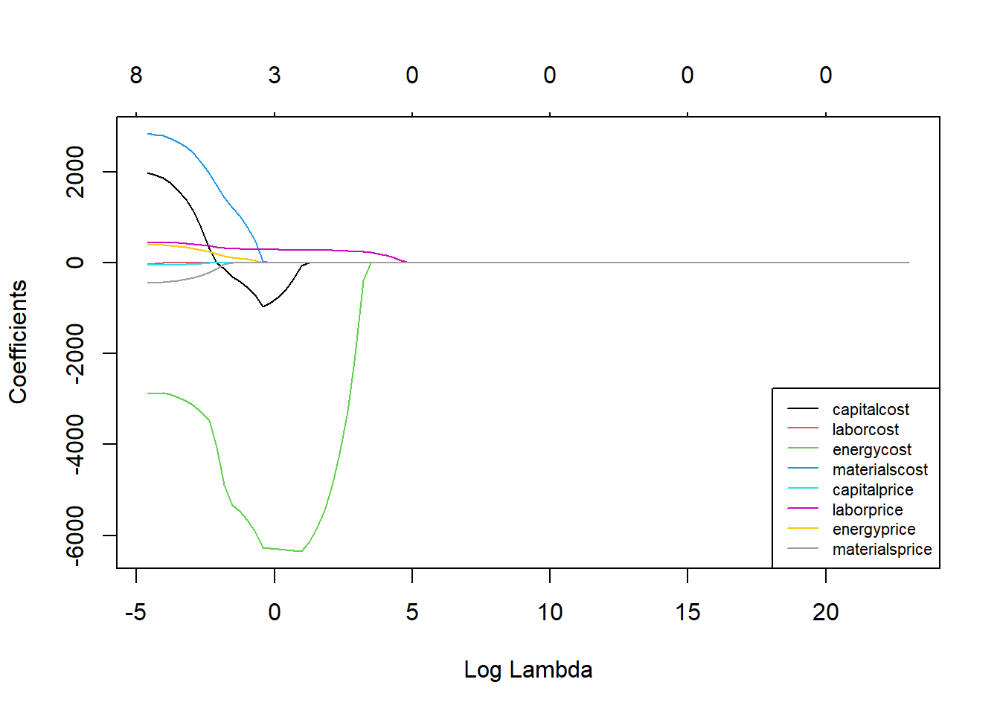
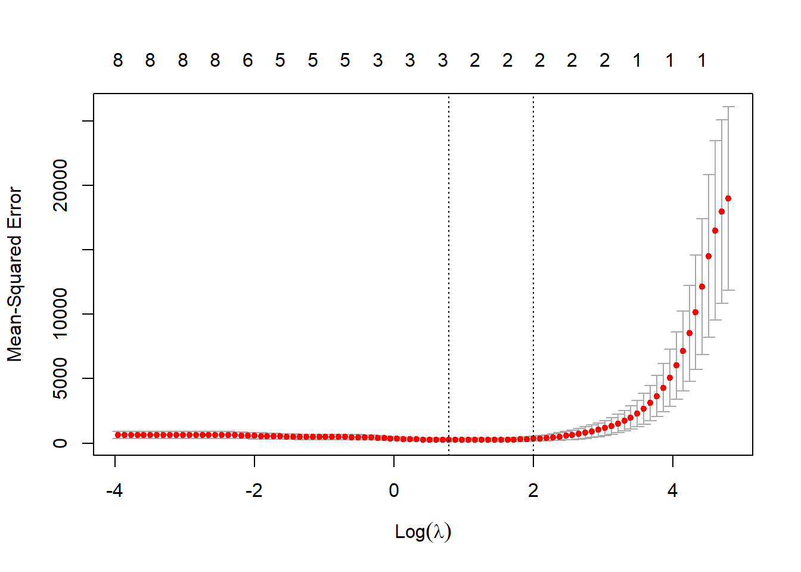
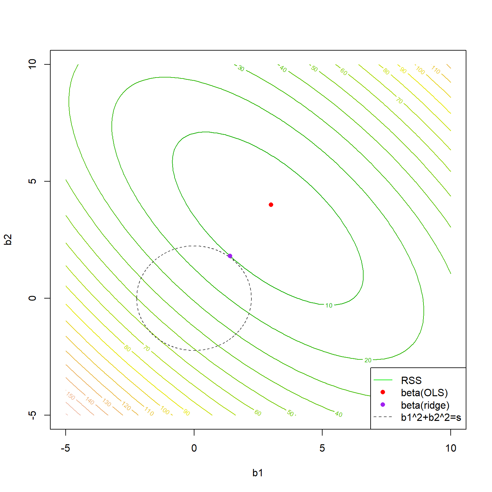

5 Regressão rígida e LASSO
5.1 Regressão rígida
Quando um modelo de regressão linear múltipla apresenta muitas variáveis correlacionadas, seus coeficientes podem ser mal estimados, acarretando em alta variância das estimativas. Tais modelos costumam ter seus coeficientes inflados devido à correlação. A regressão rígida tem por finalizadade encolher ou diminuir coeficientes de variáveis correlacionadas, com a finalidade de minimizar a variância do modelo.
Para encolher os coeficientes, a regressão rígida usa uma alteração na função perda otimizada nas estimativas de mínimos quadrados.
Seja a função perda quadrática descrita anteriormente para mínimos quadrados em regressão múltipla.
\[ \begin{align} L(\mathbf{\beta}) =& \sum_{i=1}^N \varepsilon_i^2 = \sum_{i=1}^N(y_i-\hat{y}_i)^2 =\sum_{i=1}^N(y_i-\beta_0-\sum_{j=1}^k\beta_jx_{ij})^2\\ L(\mathbf{\beta}) =& \mathbf{\varepsilon}^T\mathbf{\varepsilon} = (\mathbf{y} - \mathbf{X}\mathbf{\beta})^T(\mathbf{y} - \mathbf{X}\mathbf{\beta}) \\ =&\mathbf{y}^T\mathbf{y} - 2\mathbf{\beta}^T\mathbf{X}^T\mathbf{y} + \mathbf{\beta}^T\mathbf{X}^T\mathbf{X}\mathbf{\beta} \end{align} \]
Minimizando tal quantidade pela escolha de \(\beta\), conforme visto anteriormente, resulta nas equações normais de mínimos quadrados, \(\hat{\beta}=(\mathbf{X}^T\mathbf{X})^{-1}(\mathbf{X}^T\mathbf{y})\). Adicionado o termo de penalização de encolhimento dos coeficientes, \(\lambda\beta^T\beta\), tem-se:
\[ \begin{aligned} L(\mathbf{\beta,\lambda}) = \mathbf{y}^T\mathbf{y} - 2\mathbf{\beta}^T\mathbf{X}^T\mathbf{y} + \mathbf{\beta}^T\mathbf{X}^T\mathbf{X}\mathbf{\beta} + \lambda\beta^T\beta \end{aligned} \]
Em notação algébrica a quantidade acima, pode ser escrita como:
\[ \begin{aligned} L(\mathbf{\beta,\lambda}) =\sum_{i=1}^N(y_i-\beta_0-\sum_{j=1}^k\beta_jx_{ij})^2 + \lambda\sum_{j=1}^k\beta_j^2 \end{aligned} \]
Onde \(\lambda\) é uma constante não negativa de penalização de encolhimento (shrinkage penalty), que previne a inflação dos coeficientes. O termo \(\lambda\sum_{j=1}^k\beta_j^2\) também é chamado de de termo de regularização. Se \(\lambda=0\), tem-se a estimativa padrão de mínimos quadrados que, no caso de presença de multicolineariedade, implicarão em um modelo com alta variância. Se \(\lambda \rightarrow \infty\), os coeficientes tenderão a 0, \(\beta_j \rightarrow 0\), \(\forall j\), o que implicaria, por outro lado, em um modelo com alto vício ou viés. A regressão rígida visa, portanto, trabalhar o conflito entre vício e variância em modelos de regressão múltipla. Deve-se buscar um valor de \(\lambda\) que estabeleça uma melhor relação entre tais medidas de erro.
Tomando a notação matricial, resolvendo para \(\beta\), os coeficientes de mínimos quadrados para regressão rígida ficam:
\[ \begin{aligned} \frac{\partial L}{\partial \mathbf{\beta}} = -2\mathbf{X}^T\mathbf{y} + 2\mathbf{X}^T\mathbf{X}\mathbf{\beta} +2\lambda\beta= 0 \\ \hat{\mathbf{\beta}} = (\mathbf{X}^T\mathbf{X}+\lambda\mathbf{I})^{-1}(\mathbf{X}^T\mathbf{y}) \end{aligned} \]
Seja um conjunto de dados com informações de custos de empresas de manufatura. Pode-se observar na Figura 5.1 a presença de alta correlação entre algumas das variáveis de custo consideradas.
O gráfico de correlação da Figura 5.2 expõe as correlações aos pares em um mapa de calor, de forma que as positivas tendem para o azul escuro, enquanto as negativas para vermelho escuro.

Em um modelo de regressão rígida considerando o custo como resposta e as demais variáveis como preditores, o gráfico da Figura 5.3 expõe os níveis dos coeficientes em relação à constante de encolhimento \(\lambda\). Observa-se que o aumento desta constante implica no encolhimento dos coeficientes. Deve-se tentar encontrar o valor de \(\lambda\) que minimize o erro do modelo. Por exemplo, para o custo de energia, pode-se observar que um \(\lambda=0\) implica em alta magnitude dos coeficientes, sendo observado o encolhimento destes com o aumento de \(\lambda\).

A partir de validação cruzada pode-se selecionar o valor de \(\lambda\) dado um grid de valores. A Figura 5.4 plota os resultados. Para o exemplo o melhor nível seria \(\lambda^*=12.022\).

Os coeficientes de regressão rígida para o \(\lambda\) ótimo são expostos à seguir.
9 x 1 sparse Matrix of class "dgCMatrix"
s1
(Intercept) 123.25007
capitalcost -3408.22133
laborcost 1363.79881
energycost -8394.77369
materialscost -386.30713
capitalprice 72.51032
laborprice 117.87583
energyprice 95.02103
materialsprice 201.055655.2 Regressão via LASSO
Um problema da regressão rígida, se comparada aos métodos de seleção de variáveis, como a eliminação para trás, é que esse método não faz seleção de coeficientes ou termos no modelo. Ou seja, a regressão rígida não reduz o modelo a partir da exclusão de variáveis correlacionadas, o que implica na manutenção de preditores redundantes no modelo. Como visto, a regressão rígida apenas encolhe os coeficientes.
Uma alternativa à regressão rígida que promove a seleção de coeficientes é a regressão pelo operador de seleção e contração mínima absoluta ou Least Absolute Shrinkage and Selection Operator - LASSO. A regressão LASSO muda a penalização da função perda considerando a norma \(L_1\), \(\sum_{j=1}^k|\beta_j|\) em detrimento da norma \(L_2\), \(\sum_{j=1}^k\beta_j^2\), usada no caso rígido.
\[ \begin{aligned} L(\mathbf{\beta,\lambda}) = \sum_{i=1}^N(y_i-\beta_0-\sum_{j=1}^k\beta_jx_{ij})^2 + \lambda\sum_{j=1}^k|\beta_j| \end{aligned} \]
No caso da regressão via LASSO, não há solução fechada ou equações normais, como no caso rígido. Logo, a formulação acima deve ser minimizada via programação quadrática para estimar os coeficientes.
A Figura 5.5 plota os valores dos coeficientes no exemplo anterior em função do parâmetro de encolhimento e seleção de variáveis, \(\lambda\), na regressão via LASSO. É possível observar que à medida que \(\lambda\) aumenta, alguns coeficientes vão sendo anulados e, portanto, excluídos do modelo.

Tomando o exemplo anterior para o caso LASSO, o valor ótimo do parâmetro de encolhimento e selção é \(\lambda^*=2,2\), conforme Figura 5.6.

Os coeficientes de regressão via LASSO para o \(\lambda\) ótimo são expostos à seguir. Pode-se observar que neste caso é realizada a seleção dos coeficientes mais importantes, sendo removidos aqueles das variáveis que apresentam multicolineariedade e, logo, menor importância em relação às selecionadas.
9 x 1 sparse Matrix of class "dgCMatrix"
s1
(Intercept) 179.2195
capitalcost -175.5755
laborcost .
energycost -6210.1544
materialscost .
capitalprice .
laborprice 276.2006
energyprice .
materialsprice . 5.3 Formulações alternativas para regressão rígida e LASSO
Uma formulação alternativa para o problema de regressão rígida pode ser expressa como segue, onde \(s\) seria um parâmetro associado a \(\lambda\) que limita o crescimento dos coeficientes.
\[ \begin{aligned} Min \Biggl\{\sum_{i=1}^N(y_i-\beta_0-\sum_{j=1}^k\beta_jx_{ij})^2\Biggl\} \\ st.:\sum_{j=1}^k\beta_j^2 \leq s \end{aligned} \]
Para o caso da regressão via LASSO a formulação fica conforme segue.
\[ \begin{aligned} Min \Biggl\{\sum_{i=1}^N(y_i-\beta_0-\sum_{j=1}^k\beta_jx_{ij})^2\Biggl\} \\ st.:\sum_{j=1}^k|\beta_j| \leq s \end{aligned} \]
A Figura 5.7 ilustra a função perda quadrática sendo minimizada segundo a formulação de regressão rígida exposta. Pode-se observar que o valor dos coeficientes de mínimos quadrados são encolhidos quando a restrição de regressão rígida é imposta.

5.4 Implementações em R
A seguir serão expostas as implementações necessárias para obter os resultados do capítulo.
5.4.1 Obtenção dos dados e processamento inicial
library(AER)
library(corrplot)
library(GGally)
library(glmnet)data("ManufactCosts")
dados <- data.frame(ManufactCosts)
ggpairs(dados) + theme_bw()r <- cor(dados)
corrplot::corrplot(r,
method = "color",
type = "upper",
order = "hclust",
addCoef.col = "black",
tl.srt = 45, diag = F)X <- model.matrix(cost ~ ., dados)[,-1]
y <- dados$cost
tr <- round(0.5*nrow(dados))
set.seed(45)
treino <- sample(1:nrow(dados), tr, replace = F)
X.treino <- X[treino,]
y.treino <- y[treino]5.4.2 Regressão rígida
Obtenção do modelo para todo o grid do hiperparâmetro lambda.
grid <- 10^seq(10, 1, length = 100)
rid1 <- glmnet(X.treino, y.treino, alpha = 0, lambda = grid)
plot(rid1, xvar = "lambda", col = 1:8)
legend("bottomright", lwd = 1, col = 1:8,
legend = colnames(X.treino), cex = 0.7)Validação cruzada e grid search para seleção do lambda ótimo.
rid.cv <- cv.glmnet(X.treino, y.treino, alpha = 0)
plot(rid.cv)
bestlam <- rid.cv$lambda.min # melhor lambdaObtendo os coeficientes de regressão rígica com lambda ótimo.
out <- glmnet(X.treino, y.treino, alpha = 0)
predict(out, type = "coefficients", s = bestlam)metrics <- function(obs, pred) {
RSE <- sum((obs - pred)^2)
SST <- sum((obs - mean(obs))^2)
R2 <- 1 - RSE/SST
MAE <- mean(abs(obs - pred))
RMSE <- sqrt(mean((obs - pred)^2))
return(
data.frame(RMSE = RMSE,
MAE = MAE,
R2 = R2))
}Desempenho para dados de teste.
pred.teste <- predict(out, type = "response",
newx = X[-treino,],
s = bestlam)
metrics(y[-treino], pred.teste)5.4.3 Regressão via LASSO
Obtenção do modelo para todo o grid do hiperparâmetro lambda.
grid <- 10^seq(10, -2, length = 100)
lasso1 <- glmnet(X.treino, y.treino, alpha = 1, lambda = grid)
plot(lasso1, xvar = "lambda", col = 1:8)
legend("bottomright", lwd = 1, col = 1:8,
legend = colnames(X.treino), cex = 0.7)Validação cruzada e grid search para seleção do lambda ótimo.
lasso.cv <- cv.glmnet(X.treino, y.treino, alpha = 1)
plot(lasso.cv)
bestlam2 <- lasso.cv$lambda.min # lambda otimoObtendo os coeficientes de regressão rígica com lambda ótimo.
out2 <- glmnet(X.treino, y.treino, alpha = 1)
predict(out2, type = "coefficients", s = bestlam2)Desempenho para dados de teste.
pred.teste2 <- predict(out2, type = "response",
newx = X[-treino,],
s = bestlam2)
metrics(y[-treino], pred.teste2)5.4.4 Regressão por mínimos quadrados ordinários
lm1 <- lm(cost ~ ., dados, subset = treino)Desempenho para dados de teste.
pred.teste3 <- predict(lm1,
newdata = dados[-treino,])
metrics(y[-treino], pred.teste3)Referências
Hastie, T., Tibshirani, R., Friedman, J. H., & Friedman, J. H. (2009). The elements of statistical learning: data mining, inference, and prediction (Vol. 2, pp. 1-758). New York: springer.
Gareth, J., Daniela, W., Trevor, H., & Robert, T. (2013). An introduction to statistical learning: with applications in R. Spinger.